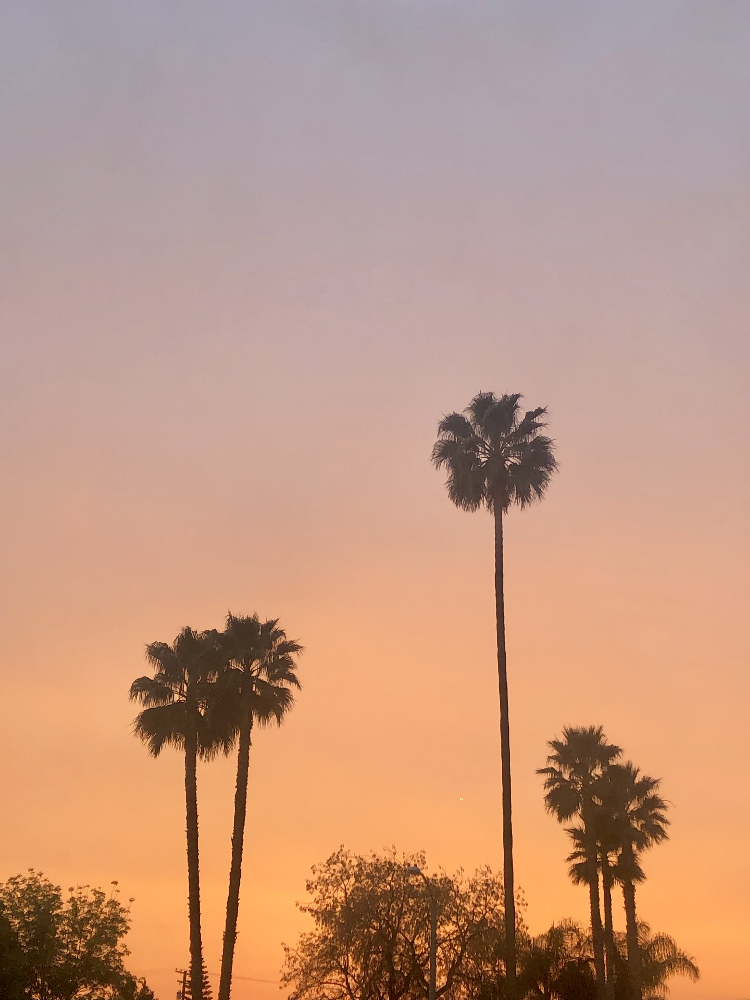
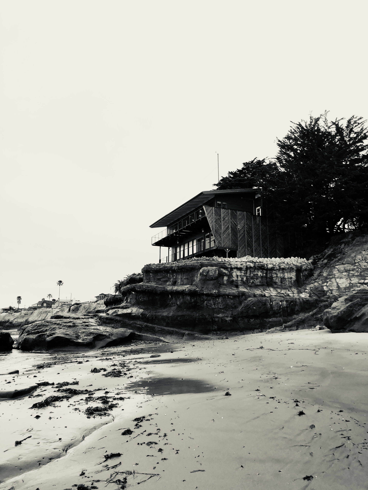
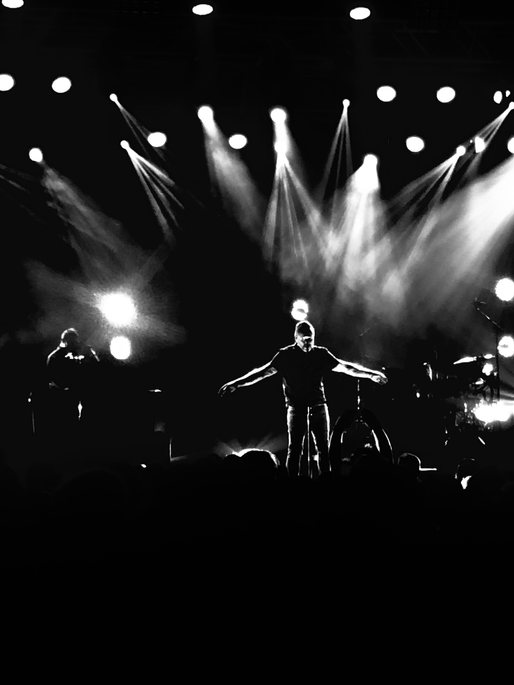
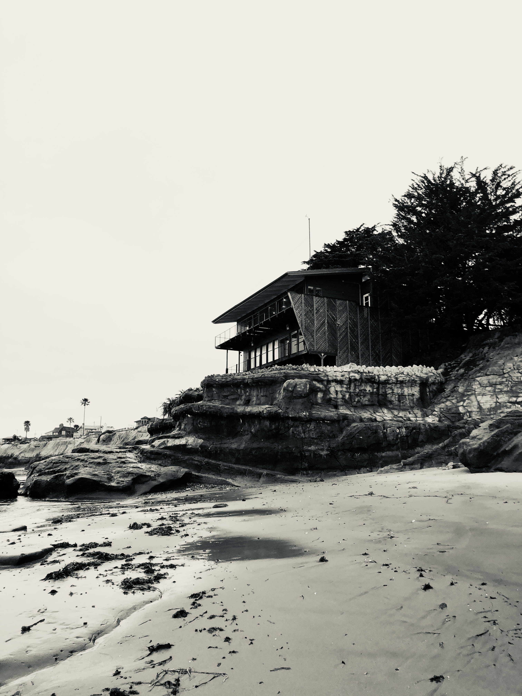
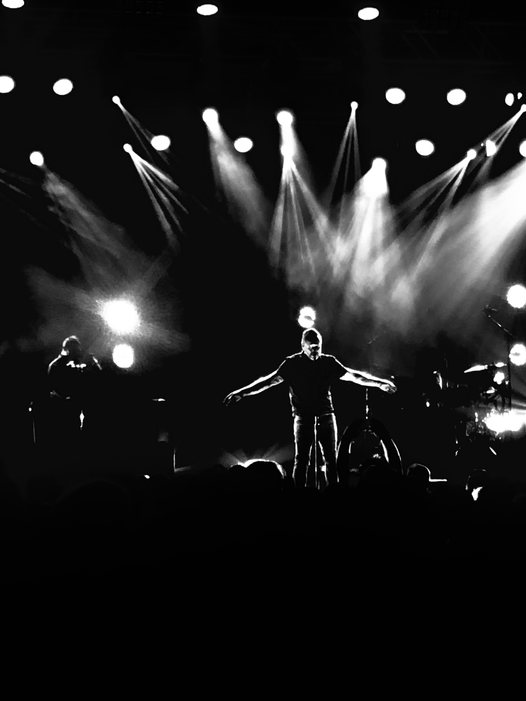

Rayah Kahles
I love to read and write, reading and writing have always been something I was good at and something that I enjoy. They are both constant activities in my life that can calm me down. I also like to listen to music, take pictures of everything I see, travel, and go on drives with my sisters. Taking pictures has always been a creative outlet for me. Pictures connect me to memories and to what strikes me as powerful or impactful.
I created an Instagram account for my photography, and I was able to share the pictures that I took with other people, including my friends and family. Even though my Instagram account for my photography is small, I still try to make every post and story as reflective, insightful, and as impactful as possible. I want it to be a safe place for people to enjoy pictures. Each post I make includes a quote that goes along with the photo that I posted. I am always taking pictures, when I travel to new places, visit family, when I go back to places that I went to during my childhood to see how much things have changed, when I hang out with my friends, when I see family members that I haven't seen in forever, I take pictures of things I find funny or moving, I take pictures of things that make me happy, pictures of my favorite places, and I take pictures of events that I go to. I always document and take pictures to remember these happy times. I take pictures just so they are not only left in my memory, but they are also on my computer once I save them to my hard drive or they are hanging on my walls once I print them out on photo paper and frame them. I have always been a person that likes to get in touch with their emotions, so pictures are a big part of my life.
I am an organized person and I like to make sure there is a place for everything. That way nothing can be lossed or misplaced. Being organized has always helped me in every single thing I do. I stay organized when I study, when I work, and when I am creating art projects. For me, organization is an essential part of how I work and how I get assignments and projects done. I am also punctual and always do my best to be on time or even early to work, events, and even social gatherings. I am a determined person, and it takes a lot to dissuade me from completing and accomplishing my goals and ambitions. I love to travel and explore new places, but having a place to come back to is always comforting. Being young and knowing about travel, photography, and social media has made me driven to start working to become a social media manager. That is what I wish to do in the future and I cannot wait to work on that goal.
I love to read and write, reading and writing have always been something I was good at and something that I enjoy. They are both constant activities in my life that can calm me down. I also like to listen to music, take pictures of everything I see, travel, and go on drives with my sisters. Taking pictures has always been a creative outlet for me. Pictures connect me to memories and to what strikes me as powerful or impactful.
I created an Instagram account for my photography, and I was able to share the pictures that I took with other people, including my friends and family. Even though my Instagram account for my photography is small, I still try to make every post and story as reflective, insightful, and as impactful as possible. I want it to be a safe place for people to enjoy pictures. Each post I make includes a quote that goes along with the photo that I posted. I am always taking pictures, when I travel to new places, visit family, when I go back to places that I went to during my childhood to see how much things have changed, when I hang out with my friends, when I see family members that I haven't seen in forever, I take pictures of things I find funny or moving, I take pictures of things that make me happy, pictures of my favorite places, and I take pictures of events that I go to. I always document and take pictures to remember these happy times. I take pictures just so they are not only left in my memory, but they are also on my computer once I save them to my hard drive or they are hanging on my walls once I print them out on photo paper and frame them. I have always been a person that likes to get in touch with their emotions, so pictures are a big part of my life.
I am an organized person and I like to make sure there is a place for everything. That way nothing can be lossed or misplaced. Being organized has always helped me in every single thing I do. I stay organized when I study, when I work, and when I am creating art projects. For me, organization is an essential part of how I work and how I get assignments and projects done. I am also punctual and always do my best to be on time or even early to work, events, and even social gatherings. I am a determined person, and it takes a lot to dissuade me from completing and accomplishing my goals and ambitions. I love to travel and explore new places, but having a place to come back to is always comforting. Being young and knowing about travel, photography, and social media has made me driven to start working to become a social media manager. That is what I wish to do in the future and I cannot wait to work on that goal.
I love to read and write, reading and writing have always been something I was good at and something that I enjoy. They are both constant activities in my life that can calm me down. I also like to listen to music, take pictures of everything I see, travel, and go on drives with my sisters. Taking pictures has always been a creative outlet for me. Pictures connect me to memories and to what strikes me as powerful or impactful.
I created an Instagram account for my photography, and I was able to share the pictures that I took with other people, including my friends and family. Even though my Instagram account for my photography is small, I still try to make every post and story as reflective, insightful, and as impactful as possible. I want it to be a safe place for people to enjoy pictures. Each post I make includes a quote that goes along with the photo that I posted. I am always taking pictures, when I travel to new places, visit family, when I go back to places that I went to during my childhood to see how much things have changed, when I hang out with my friends, when I see family members that I haven't seen in forever, I take pictures of things I find funny or moving, I take pictures of things that make me happy, pictures of my favorite places, and I take pictures of events that I go to. I always document and take pictures to remember these happy times. I take pictures just so they are not only left in my memory, but they are also on my computer once I save them to my hard drive or they are hanging on my walls once I print them out on photo paper and frame them. I have always been a person that likes to get in touch with their emotions, so pictures are a big part of my life.
I am an organized person and I like to make sure there is a place for everything. That way nothing can be lossed or misplaced. Being organized has always helped me in every single thing I do. I stay organized when I study, when I work, and when I am creating art projects. For me, organization is an essential part of how I work and how I get assignments and projects done. I am also punctual and always do my best to be on time or even early to work, events, and even social gatherings. I am a determined person, and it takes a lot to dissuade me from completing and accomplishing my goals and ambitions. I love to travel and explore new places, but having a place to come back to is always comforting. Being young and knowing about travel, photography, and social media has made me driven to start working to become a social media manager. That is what I wish to do in the future and I cannot wait to work on that goal.
Experience
Office Manager
• Keep office organized and running efficiently
• Manage media accounts for company
• Experience with Spreadsheets, emailing international companies, office organization
Volunteer at Thrift Shop
• Responsible for checking out customers
• Aiding customers with finding products
Recreational Gynmastics Coach
• Help students learn basic gymnastic skills
• Teaching gymnastics terminology to children from ages 3 to 17
• Help children overcome fears of new skills
• Teach preschool level gymnastics
Education
University of California Riverside
Portfolio




 